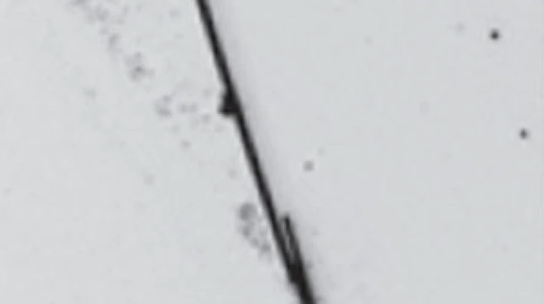

Inhaling carbon nanotubes could be as harmful as breathing in asbestos, and its use should be regulated lest it lead to the same cancer and breathing problems that prompted a ban on the use of asbestos as insulation in buildings, according a new study posted online today by Nature Nanotechnology.
During the study, led by the Queen's Medical Research Institute at the University of Edinburgh/MRC Center for Inflammation Research (CIR) in Scotland, scientists observed that long , thin carbon nanotubes look and behave like asbestos fibers, which have been shown to cause mesothelioma , a deadly cancer of the membrane lining the body's internal organs (in particular the lungs) that can take 30 to 40 years to appear following exposure. Asbestos fibers are especially harmful, because they are small enough to penetrate deep into the lungs yet too long for the body's immune system to destroy.
The researchers reached their conclusions after they exposed lab mice to needle-thin nanotubes: The inside lining of the animals' body cavities became inflamed and formed lesions.
 Carbon nanotubes are generally made from sheets of graphite no thicker than an atom—about a nanometer, or one billionth of a meter wide—and formed into cylinders, with the diameter varying from a few nanometers up to tens of nanometers. (They can be hundreds or even thousands of nanometers long.) There is a greater concern about "multiwalled" nanotubes consisting of several reinforced cylinders, because they are able to retain their pointy shapes better than thinner nanotubes..
Scientists have been noting the similarities between carbon nanotubes and asbestos for the past few years, says study co-author Andrew Maynard, chief science advisor for the Woodrow Wilson International Center for Scholars's Project on Emerging Nanotechnologies, based in Washington, D.C. Maynard, who has been researching and warning of the potential health and environmental risks of carbon nanotubes since 2003, says that there has been no coordinated effort to date to analyze the findings of carbon nanotube toxicity studies. He notes that technology companies have not found that the risks of using carbon nanotubes outweigh the benefits—they are excellent conductors of electricity.
Carbon nanotubes can also be used to reinforce polymers to create very strong plastics. University of Michigan at Ann Arbor researchers are scaling the strength of nanosheets and a nanoscale polymer resembling white glue. Visually, it looks like a brick wall, in which clay nanosheet "bricks" are held together by water-soluble polyvinyl alcohol "mortar". The result, according to the researchers, is a composite plastic that is light and transparent but as strong as steel.
Online today inNature Nanotechnology, Lapotko and his colleagues report that those mini-explosions made it possible not only to pick up sound from where tumor cells were located—and thereby detect the presence of as few as three cancer cells—but it also destroyed the cells in the process. For cases in which it was possible to surgically resect most of the cancer tissue, 100% of the animals survived, thanks to the fact that no residual cancer cells remained alive. And in cases where only partial surgical removal of a tumor was an option, the survival rate for the animals doubled.
IBM has identified carbon nanotubes as important for studying electrical and optical phenomena on the nanometer scale, and the company has high hopes for the technology. Carbon nanotubes show promise as building blocks for computer chips that are "smaller, faster and lower power" than those made of silicon, Phaedon Avouris, an IBM fellow and lead researcher on the company's carbon nanotube efforts, wrote in the March 2007 issue of Physics World. "One of the most exciting developments in carbon nanotube research is the recent discovery that nanotubes can emit light," he added. "That finding opens the door to circuits in which standard copper interconnects are replaced by optical waveguides made from nanotubes—allowing the possibility of fully integrated optoelectronic circuits."
Nanotubes are likewise being developed for use in new drugs, energy-efficient batteries, electronics and other products under the assumption that they are no more dangerous than graphite. But some scientists and environmentalists like Maynard caution that they harbor hidden dangers. Compounding this concern is the prediction that the market for carbon nanotubes will grow from $6 million in 2004 to more than $1 billion by 2014, according to studies by a number of firms, including the Freedonia Group. A 2006 report from Lux Research projected that nanoscale technologies will be used in $2.6 trillion worth of manufactured goods by the year 2014.
The Edinburgh CIR study, which will also appear in the June issue of Nature Nanotechnology, was very specific, looking only at nanotubes that emulated fiber behavior and their potential to cause a certain type of cancer; other types of nanotubes could affect the body differently—for better or worse, researchers say.
Maynard and his colleagues focused their attention specifically on the hypothesis that long, thin carbon nanotubes could have the same impact as similarly shaped asbestos fibers. "If you get these things into the lungs," he says, "they form scarlike tissue, and the body sees them like a scaffolding, building new cells over them and thickening the walls of the lungs."
The study is not intended to keep nanotechnology from developing further but rather to flag potential dangers of nanotubes in places at manufacturing and disposal sites, the researchers wrote in their paper.
"There is an immediate need to examine how carbon nanotubes are being used and see if there's any chance that [people] are being exposed to dangerous materials," Maynard says, adding that no one paid attention to the dangers of asbestos until it was too late for a lot of people.
By Larry Greenemeier on May 20, 2008
Photos authors: Courtesy of the University of Edinburgh/MRC Center for Inflammation Research